Introducción a los algoritmos .¶
Introducción¶
Un computador es capaz de realizar determinadas acciones sencillas, como sumar, restar o transferir datos. Estas acciones son útiles, pero los problemas que normalmente interesa resolver son más complejos. Para solucionar un problema real, es necesario encontrar un método de resolución del problema y, posteriormente, descomponerlo en acciones sencillas, que el computador sea capaz de realizar.
Un algoritmo es una serie de pasos organizados, que describe el proceso que se debe seguir, para dar solución a un problema específico. Por ejemplo, una receta para un robot de cocina puede ser
-
Espera a que introduzca maíz y mantequilla.
-
Gira durante un minuto, avanzando progresivamente de la velocidad 1 a la 5.
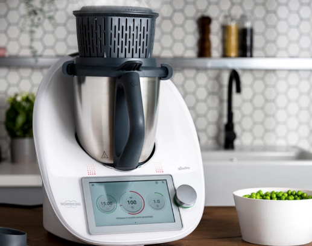
-
Espera a que introduzca leche y sal.
-
Gira durante 30 segundos a velocidad 7.
-
Gira durante 10 minutos a velocidad 3 mientras cuece a una temperatura de 90 grados.
-
Se detiene. ¡La crema está lista!
Los algoritmos son los pilares en la informática.
Características¶
Un algoritmo tiene que ser:
-
Preciso: Es claro en cada uno de sus pasos
-
Definido: Si se realiza el algoritmo dos o más veces con los mismos datos siempre dará el mismo resultado
-
Finito: Siempre va a tener un fin
Para resolver un mismo problema, se pueden definir infinidad de algoritmos. Normalmente interesa, no solo encontrar un algoritmo, sino que este sea eficiente
Estructura del algoritmo¶
Por lo general, el algoritmo tiene la estructura
-
Datos de entrada
-
Según el problema a resolver, los datos son procesados
-
Datos de salida con la solución
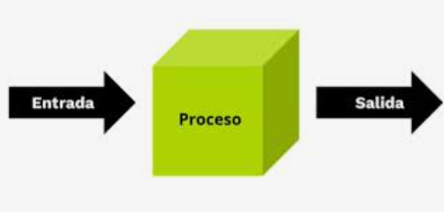
Herramientas para definir algoritmos¶
Existe diversas herramientas para definir algoritmos. Nosotros vamos a ver brevemente dos de las más utilizada.
-
Pseudocódigo
-
Diagramas de flujo
Pseudocódigo¶
Una de las herramientas que permiten definir algoritmos es pseudocódigo. El pseudocódigo es un lenguaje que permite pasar casi de manera directa la solución del problema a un lenguaje de programación específico. El pseudocódigo es una serie de pasos bien detallados y claros que conducen a la resolución de un problema. La facilidad de pasar casi de forma directa el pseudocódigo a la computadora ha dado como resultado que muchos programadores implementen de forma directa los programas en la computadora.
https://es.wikipedia.org/wiki/Pseudoc%C3%B3digo
Ejemplo volumen:¶
El pseudocódigo para determinar el volumen de una caja de dimensiones A, B y C se puede establecer de la siguiente forma:
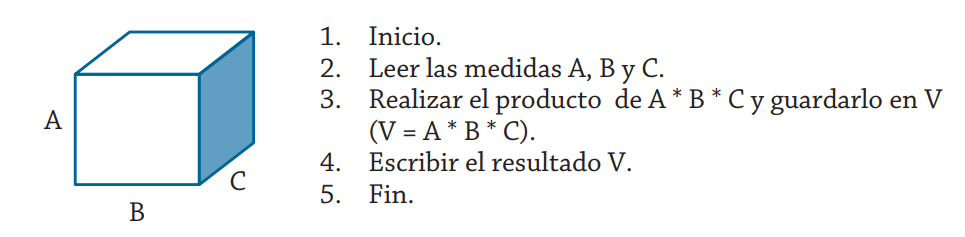
1. Inicio
2. Leer las medidas A, B y C
3. Realizar el producto de A * B * C y guardarlo en V (V = A * B * C)
4. Escribir el resultado V
5. Fin
Como se puede ver, se establece de forma precisa la secuencia de los pasos a realizar; además, si se les proporciona siempre los mismos valores a las variables A, B y C, el resultado del volumen será el mismo y, por consiguiente, se cuenta con un final.
Diagrama de flujo¶
Los diagramas de flujo permiten representar visualmente qué operaciones se requieren y en qué secuencia se deben efectuar para solucionar un problema dado.
https://es.wikipedia.org/wiki/Diagrama_de_flujo
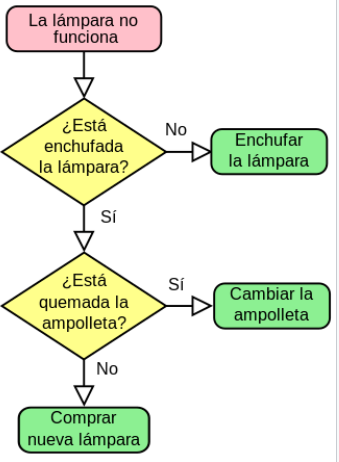
Los diagramas de flujo desempeñan un papel vital en la programación de un problema, ya que facilitan la comprensión de problemas complicados y sobre todo aquellos cuyos procesos son muy largos; generalmente, los diagramas de flujo se dibujan antes de comenzar a programar el código fuente, que se insertará posteriormente en el ordenador.
Dentro de los diagramas de flujo se pueden utilizar los símbolos que se presentan a continuación, con los cuales se indican las operaciones que se efectuarán sobre los datos para producir un resultado.
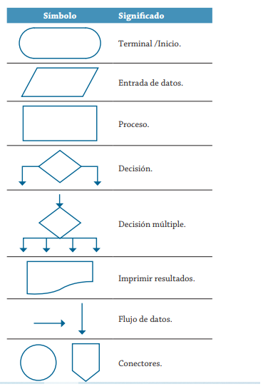
Ejemplo volumen¶
Se puede establecer la solución del diagrama de flujo para determinar el volumen de una caja de dimensiones A, B y C como se muestra a continuación.
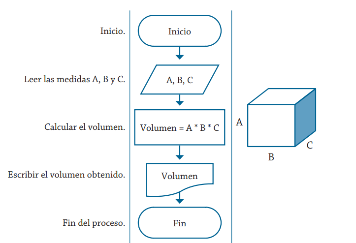
Y como se puede ver de manera gráfica, se establece de forma precisa la secuencia de los pasos por realizar para obtener el resultado del volumen. Como se puede verificar, son los mismos pasos que se establecieron en el algoritmo presentado previamente mediante el pseudocódigo.
Importancia de pseudocódigo y diagramas de flujo¶
Es importante para un programador:
-
definir un algoritmo tanto en pseudocódigo como en diagrama de flujo para documentar un proyecto software
-
entender un algoritmo tanto en pseudocódigo como en diagrama de flujo que haya desarrollado otro para poder traducirlo a un lenguaje de programación en concreto y resolver un problema.
PSeInt¶
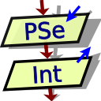
Como vemos, el pseudocódigo nos permite mediante lenguaje natural describir un algoritmo que posteriormente se traducirá a un lenguaje de programación en concreto, pero tenemos herramientas educativas que nos permiten ejecutar dicho algoritmo como si de un lenguaje de programación se tratara y comprobar que el algoritmo es correcto.
PSeInt es una de estas herramientas. Vamos a trabajar con ella estos primeros días para:
-
habituarnos a programar
-
comprobar que nuestro algoritmo es correcto
-
comenzar a ver las características básicas de un IDE básico
Podemos descargarlo
https://sourceforge.net/projects/pseint/
Tenemos un completo manual de uso en
https://www.youtube.com/watch?v=FvibfpSVFBw&list=PLwOemaB2t99YhnRhGDN-izDQt1_8-LUXG&index=1
Instalación¶
Descarga la versión de PSeInt para tu sistema operativo y ejecútalo. Tenemos versiones portables que no son necesarias instalarlas
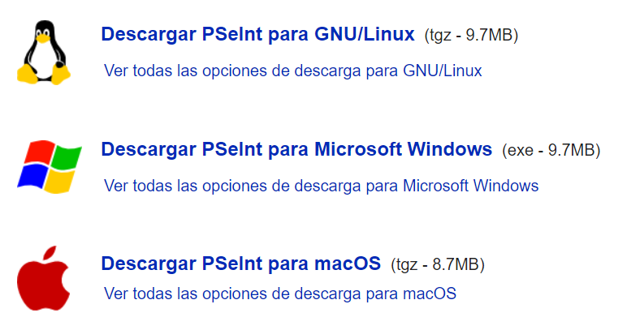
Vamos a ver en Linux.
-
Descarga la versión de 64bits para Linux
-
Descomprime el fichero
-
Entra en la carpeta
-
Botón derecho->Abrir terminal
-
Escribe el comando
./pseint
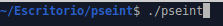
- Deja que cree los lanzadores
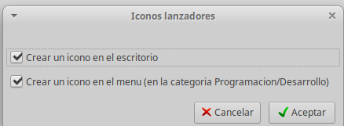
- Elige la opción 1 y elige la opción de IES_ClaradelRey
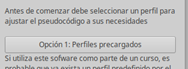
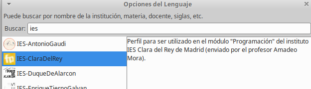
Nota
Para todos los ejercicios en PsInt tenéis que indicar con comentarios vuestro nombre y el enunciado del ejercicio. Todos los comentarios van precedidos por "//" y no forman parte del algoritmo. Nos permiten explicar bloques del algoritmo
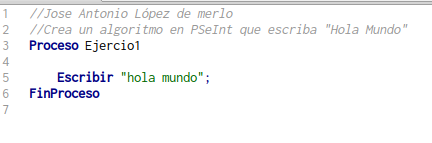
Historia de "Hello world"¶
Es un clásico cuando empezamos a aprender un lenguaje de programación el crear como primer programa la muestra de la frase "Hello world" u "Hola mundo". Podéis ver la historia en
https://es.wikipedia.org/wiki/Hola_mundo
Ejercicio1¶
Crea un algoritmo en PSeInt que muestre "Hola Mundo". Captura de pantalla del algoritmo
Diagrama de flujo en PSInt¶
Esta herramienta nos permite generar el diagrama de flujo una vez hemos creado el algoritmo
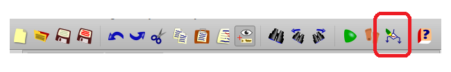
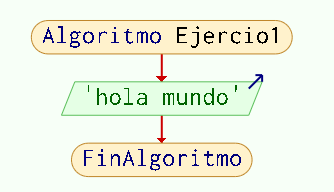
Estructuras principales de un algoritmo¶
Variables¶
En el proceso de datos necesitamos guardarlos en algún lugar para procesarlos. Un ordenador tiene la memoria RAM para almacenar la información que procesa. Los lenguajes de programación nos permiten definir una variable con un nombre y con un tipo para que el ordenador nos reserve espacio para trabajar con esa información
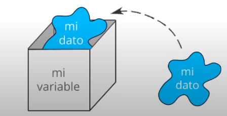
Dependiendo del tipo necesario: Texto, número entero, número real, lista de nombres de alumno, imagen..., el ordenador reserva es espacio necesario para guardar el dato y procesarlo
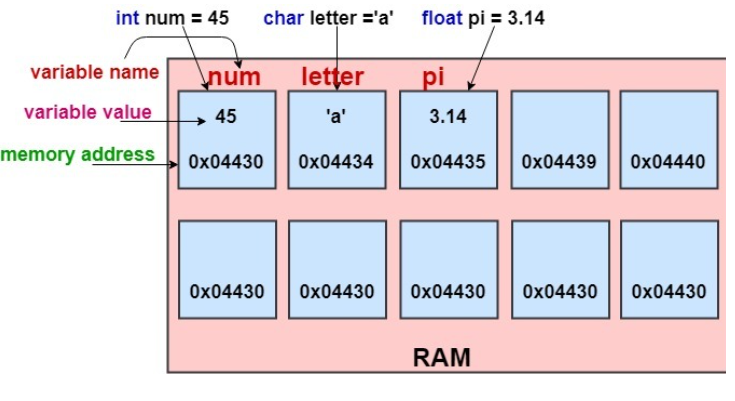
En un algoritmo, conviene definir los datos que necesitamos como haremos posteriormente en un lenguaje de programación
En PSeInt tenemos unos tipos básicos
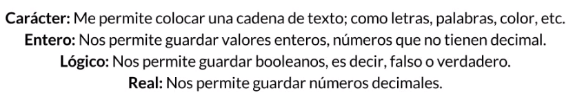
Y definiremos lo tipos de datos al inicio del algoritmo
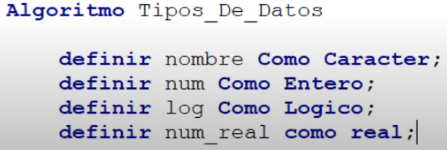
Ejercicio2¶
- Crea un algoritmo que pida al usuario su nombre y escriba "Hola " + nombre. Comenta el código
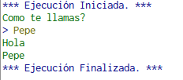
- Modifica el anterior para que pida su nombre y su edad y escriba
"Hola "+ nombre+ " tu edad es de " + edad
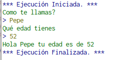
Podemos escribir varias sentencias en una sola línea separando con comas
Escribir \"Hola \",nombre, \" tu edad es de \",edad;
Error de software (bug)¶
Introducción a los errores en Programación¶
Un error de software, error o simplemente fallo (también conocido por el inglés, bug) es un problema en un programa de computadora o sistema de software que desencadena un resultado indeseado.
Tipo de errores:¶
Error de sintaxis o en tiempo de depuración¶
Cuando no seguimos las reglas del lenguaje de programación el depurado o interprete no puede leer el programa. En nuestra pequeña herramienta PSeInt hemos exigido el ";" o definir el tipo de dato, por lo que nos indicará que hay un error
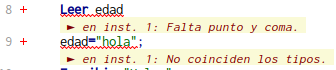{width="3.500488845144357in" height="0.729268372703412in"}
Error en tiempo de ejecución¶
Se produce cuando el ordenador no puede ejecutar alguna instrucción de forma correcta y no puede seguir ejecutando el programa. Por ejemplo, hemos definido la variable "edad" como entero y el algoritmo no comprueba la entrada de datos, si el usuario introduce un dato diferente a un entero
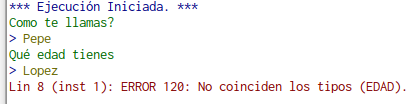{width="3.3260947069116362in" height="0.8255708661417323in"}
Errores de lógica¶
El programa no resuelve el problema que se le pide. Por ejemplo, queremos que reste dos números y devuelve la suma
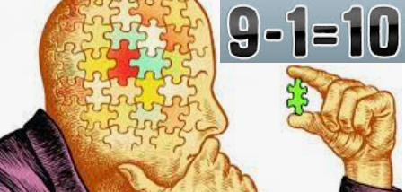{width="2.5641021434820646in" height="1.2163965441819773in"}
Debugger o depurador¶
Necesitaremos utilizar las herramientas de IDE para localizar fácilmente los errores. El debugger es nuestro mejor aliado como programadores. Nuestro pequeño IDE nos permite seguir paso a paso el algoritmo. Pruébelo con el ejercicio2
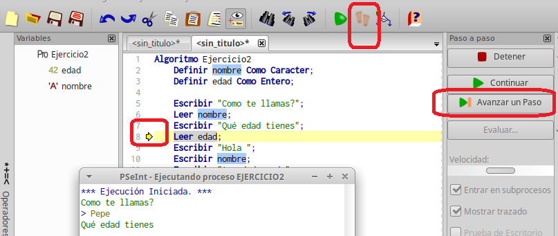
Estructuras secuenciales.¶
En este tipo de estructura las instrucciones se realizan o se ejecutan una después de la otra y, por lo general, se espera que se proporcione uno o varios datos, los cuales son asignados a variables para que con ellos se produzcan los resultados que representen la solución del problema. Los algoritmos que hemos visto hasta ahora son secuenciales, solo hay un camino
Ejemplo¶
Se desea implementar un algoritmo para obtener la suma de dos números cualesquiera. Se debe partir de que para poder obtener la suma es necesario contar con dos números, pues el proceso que debemos realizar es precisamente la suma de estos, la cual se asigna a una variable que se muestra como resultado del proceso.
Es recomendable indicar mediante una tabla las variables que se utilizan, señalando lo que representan y sus características, esta acción facilitará la lectura de la solución de un problema dado, sin importar qué herramienta de programación se esté utilizando para la representación de la solución. Para el problema de la suma de dos números, la tabla siguiente muestra las variables utilizadas en la solución.
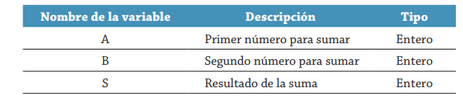
Los pasos por seguir son los mostrados en el pseudocódigo siguiente, que corresponde al algoritmo que permite determinar la suma de dos números cualesquiera.
1. Inicio
2. Leer A, B
3. Hacer S = A + B
4. Escribir S
5. Fin
La representación del algoritmo mediante la utilización de un diagrama de flujo sería como el que se muestra en el diagrama siguiente.
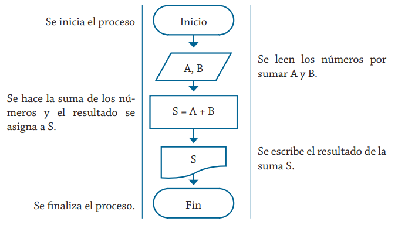
Ejercicio 3¶
- Escribe el algoritmo anterior en PSint. Comenta el código
Ejemplo¶
Un estudiante realiza cuatro exámenes durante el trimestre, los cuales tienen la misma ponderación. Realiza el pseudocódigo y el diagrama de flujo que representen el algoritmo necesario para obtener el promedio de las calificaciones obtenidas.
Las variables que se van a utilizar en la solución de este problema se muestran en la tabla siguiente.
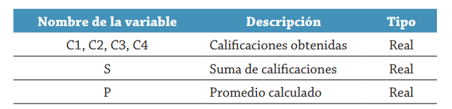
1. Inicio
2. Leer C1, C2, C3, C4
3. Hacer S = C1 + C2 + C3 + C4
4. Hacer P = S/4
5. Escribir P
6. Fin
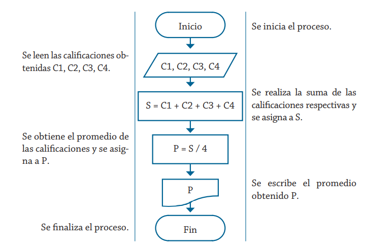
Ejercicio 4¶
- Escribe el algoritmo anterior en PSint
Ejercicio 5¶
Escribe en PsInt los siguientes algoritmos. Comenta el código
-
Crea en pseudocódigo el algoritmo de cálculo del área de un rectángulo, tomando b y a como su base y altura, y teniendo en cuenta que el área es A = b*a
-
Crea un algoritmo que pida el radio R y calcule el área y el perímetro de la circunferencia
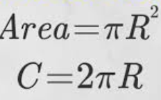
- Crea un algoritmo donde se requiere determinar el sueldo semanal (SS) de un trabajador con base en las horas (HT) que trabaja y el pago por hora que recibe (PH).